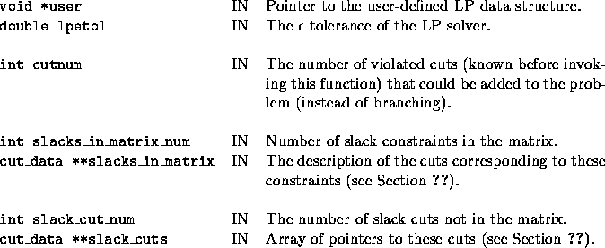
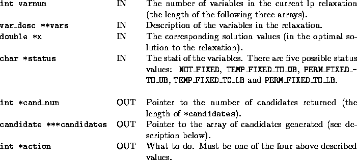
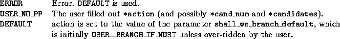

There are two user-written functions invoked from
select_candidates_u. The first one (
user_shall_we_branch()) decides whether to
branch at all, the second one (
user_select_candidates()) chooses the
branching objects. The argument lists of the two functions are the
same, and if branching occurs (see discussion below) then the contents
of *cand_num and *candidates will not change between the
calls to the two functions.
The first of these two functions is invoked in each iteration
after solving the LP relaxation and (possibly) generating cuts.
Therefore, by the time it is called, some violated cuts might be known.
Still, the user might decide to branch anyway. The second function is
invoked only when branching is decided on.
int user_shall_we_branch(void *user, double lpetol, int cutnum,
int slacks_in_matrix_num,
cut_data **slacks_in_matrix,
int slack_cut_num, cut_data **slack_cuts,
int varnum, var_desc **vars, double *x,
char *status, int *cand_num,
branch_obj ***candidates, int *action)
Given (1) the number of known violated cuts that can be added to the
problem when this function is invoked, (2) the constraints that are
slack in the LP relaxation, (3) the slack cuts not in the matrix that
could be branched on (more on this later), and (4) the solution to the
current LP relaxation, the user must decide whether to branch or not.
Branching can be done either on variables or slack cuts. A pool of
slack cuts which has been removed from the problem and kept for
possible branching is passed to the user. If any of these happen to
actually be violated (it is up to the user to determine this), they
can be passed back as branching candidate type VIOLATED_SLACK
and will be added into the current relaxation. In this case, branching
does not have to occur (the structure of the *candidates array
is described below in user_select_candidates()).
This function has two outputs. The first output is *action which
can take four values: USER__DO_BRANCH if the user wants to
branch, USER__DO_NOT_BRANCH if he doesn't want to branch,
USER__BRANCH_IF_MUST if he wants to branch only if there are
no known violated cuts, or finally USER__BRANCH_IF_TAILOFF if he
wants to branch in case tailing off is detected. The second output is the
number of candidates and their description. In this function the only
sensible ``candidates'' are VIOLATED_SLACKs.
There is no post processing, but in case branching is
selected, the col_gen_before_branch() function is invoked
before the branching would take place. If that function finds dual
infeasible variables then (instead of branching) they are added to the
LP relaxation and the problem is resolved. (Note that the behavior of
the col_gen_before_branch() is governed by the
colgen_strat[] TM parameters.)



The cuts the user unpacks and wants to be added to the problem (either because they are of type VIOLATED_SLACK or type CANDIDATE_CUT_NOT_IN_MATRIX) will be deleted from the list of slack cuts after this routine returns. Therefore the same warning applies here as in the function user_unpack_cuts().